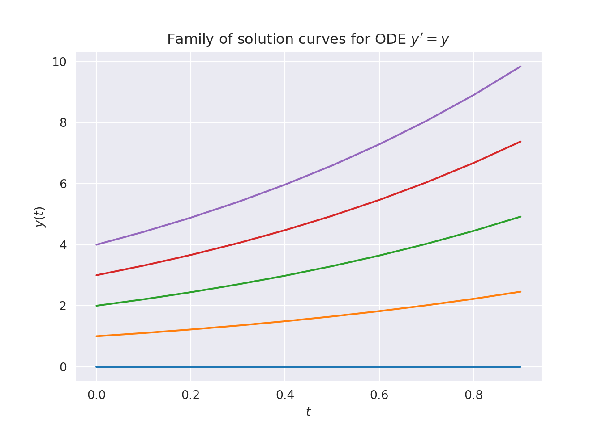
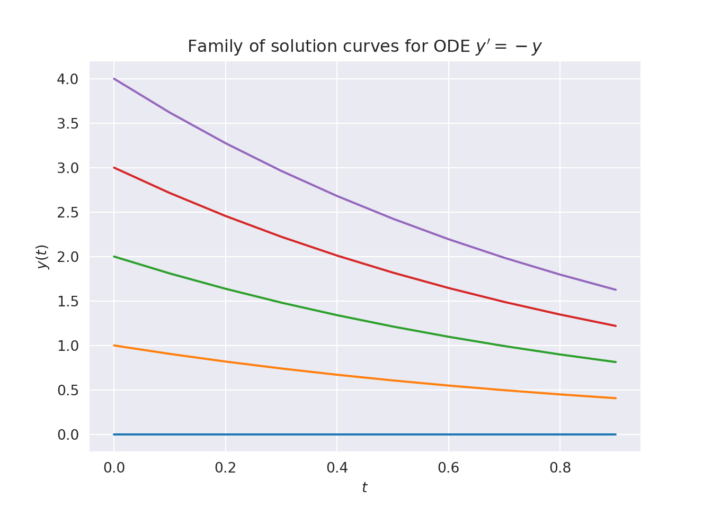
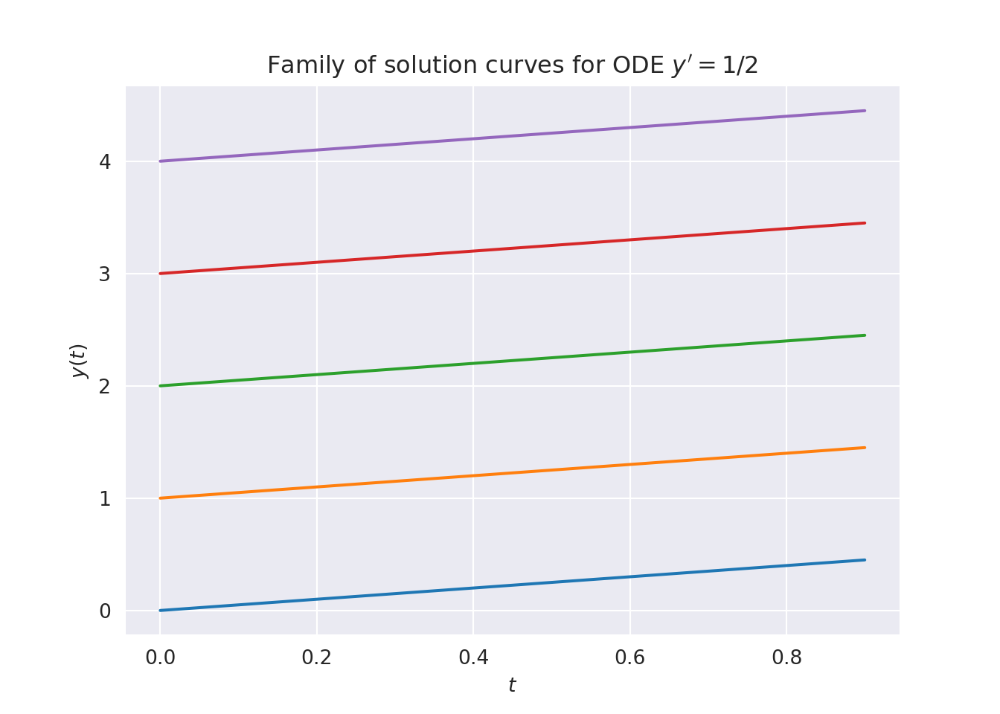
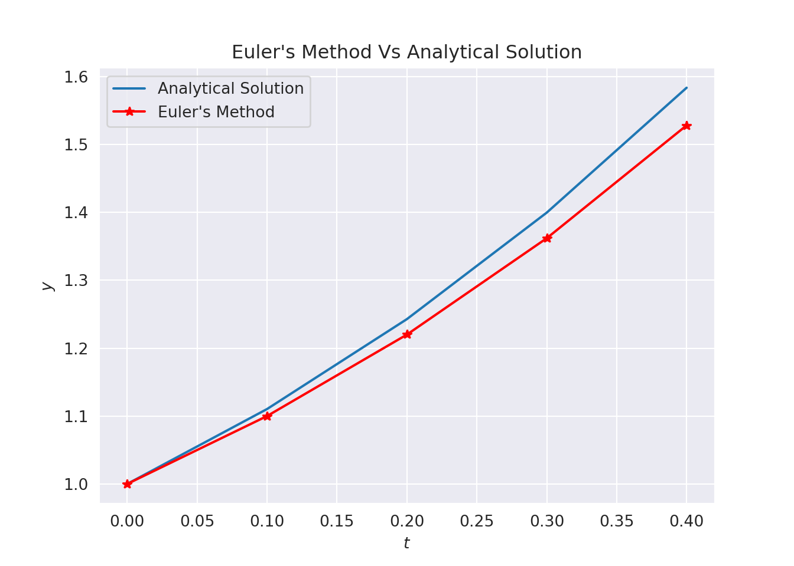
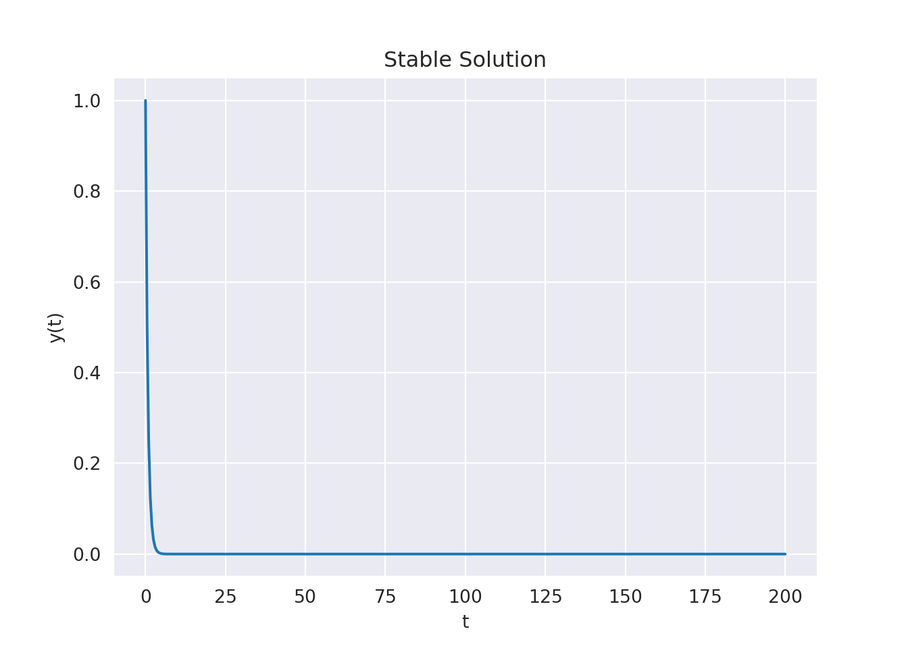
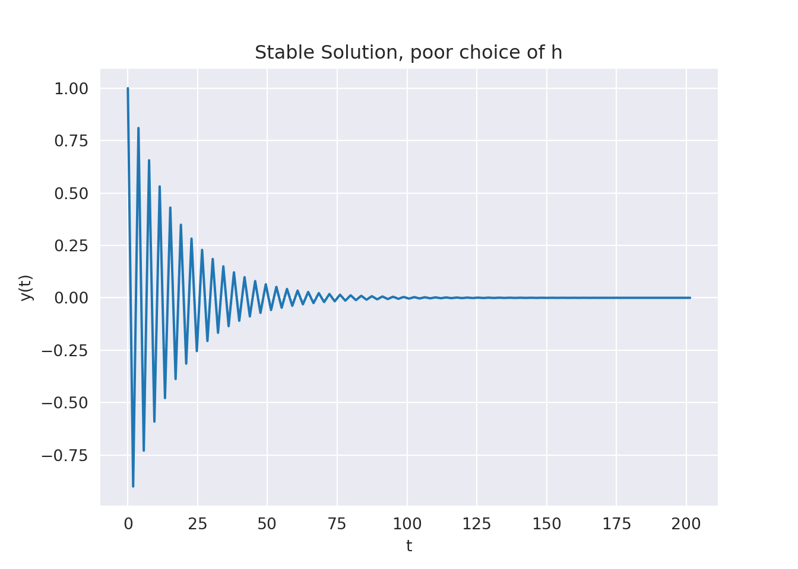
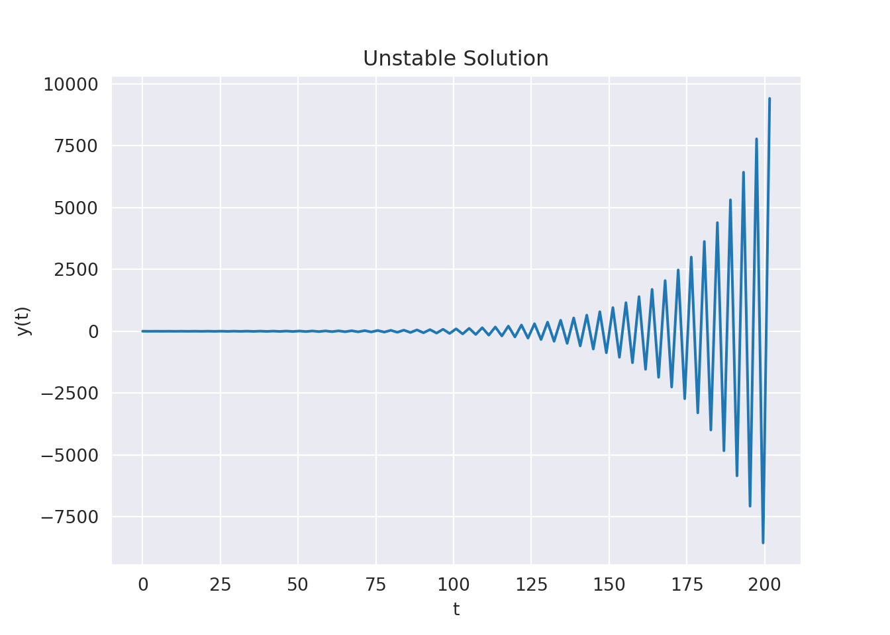
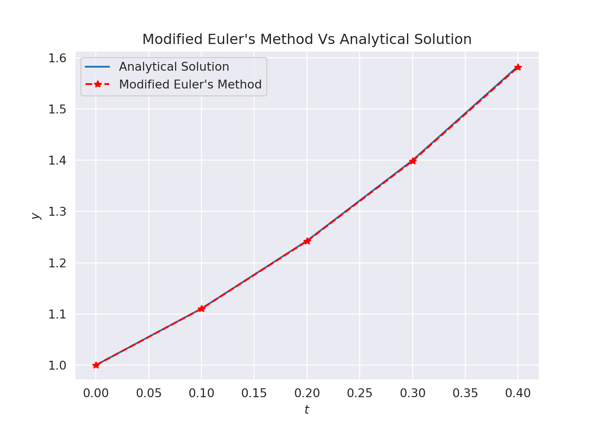
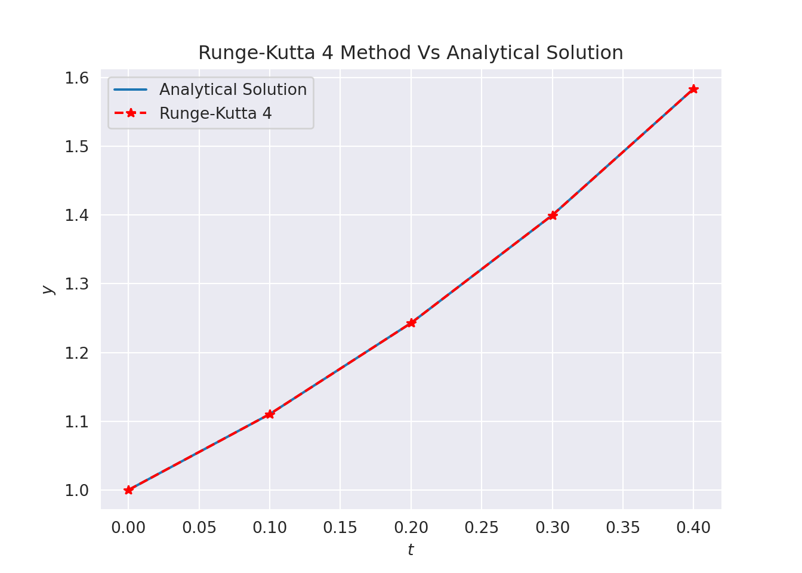

Chapter 3 Ordinary Differentiable Equations (ODEs)
Ordinary differential equations govern a great number of many important physical processes and phenomena. Not all differential equations can be solved using analytic techniques. Consequently, numerical solutions have become an alternative method of solution, and these have become a very large area of study.
Importantly, we note the following:
- By itself \(y^\prime = f(t, y)\) does not determine a unique solution.
- This simply tells us the slope \(y^\prime(t)\) of the solution function at each point, but not the actual value \(y(t)\) at any point.
- There are an infinite family of functions satisfying an ODE.
- To single out a particular solution, a value \(y_0\) of the solution function must be specified at some point \(t_0\). These are called initial value problems.
3.1 Initial Value Problems
The general first order equation can be written as: \[\begin{equation} {dy\over dt}=f(t,y),\tag{3.1} \end{equation}\] with \(f(t,y)\) given. Together with this may be given an initial condition, say \(y(t_0)=y_0,\) in which case (3.1) and this condition form an initial value problem. Its general solution contains a single arbitrary constant of integration which can be determined from the given initial condition.
3.2 Converting an \(n^{th}\) Order ODE to a System of First Order ODEs
Consider the ODE \[\begin{equation} \frac{d^n x(t)}{dt^n}= f(x(t),t). \tag{3.2} \end{equation}\] By introducing a set of new variables, we are able to write equation (3.2) as a system of \(n\) first order ODEs. We let \[\begin{align} x_0(t) &= x(t), \\ x_1(t) &= x'(t),\\ &\vdots \\ x_{n-1}(t) &= x^{(n-1)}(t). \end{align}\] Using the above we can write our \(n\)th order ODE as a system \(n\) of first order ODEs, \[\begin{equation} \left( \begin{array}{c} x'_0(t)\\ x'_1(t)\\ \vdots\\ x'_{n-2}(t)\\ x'_{n-1}(t) \end{array} \right) = \left( \begin{array}{ccccc} 0 & 1 & 0 & \ldots & 0 \\ 0 & 0 & 1 & 0 & \ldots \\ & & & \ddots & \\ 0 & 0 & \ldots & 0 & 1\\ 0 & 0 & \ldots & 0 & 0 \end{array} \right) \left( \begin{array}{c} x_0(t)\\ x_1(t)\\ \vdots\\ x_{n-2}(t)\\ x_{n-1}(t)\\ \end{array} \right) + \left( \begin{array}{c} 0\\ 0\\ \vdots\\ 0\\ f(x_0(t),t) \end{array} \right). \end{equation}\]3.3 Stability of ODEs
Should members of the solution family of an ODE move away from each other over time, then the equation is said to be unstable. If the family members move closer to one another with time then the equation is said to be stable. Finally, if the solution curves do not approach or diverge from one another with time, then the equation is said to be neutrally stable. So small perturbations to a solution of a stable equation will be damped out with time since the solution curves are converging. Conversely, an unstable equation would see the perturbation grow with time as the solution curves diverge.
To give physical meaning to the above, consider a 3D cone. If the cone is stood on its circular base, then applying a perturbation to the cone will see it return to its original position standing up, implying a stable position. If the cone was balanced on its tip, then a small perturbation would see the cone fall, there the position is unstable. Finally, consider the cone resting on its side, applying a perturbation will simply roll the cone to some new position and thus the position is neutrally stable.
3.3.1 Unstable ODE
An example of an unstable ODE is \(y^\prime = y\). Its family of solutions are given by the curves \(y(t) = ce^t\). From the exponential growth of the solutions we can see that the solution curves move away from one another as time increases implying that the equations is unstable. We can see this is the plot below.

3.3.2 Stable ODE
Now consider the equation \(y^\prime = -y\). Here the family of solutions is given by \(y(t) = ce^{-t}\). Since we have exponential decay of the solutions we can see that the equation is stable as seen in Figure below.

3.3.3 Neutrally Stable ODE
Finally, consider the ODE \(y^\prime = a\) for a given constant \(a\). Here the family of solutions is given by \(y(t) = at + c\), where \(c\) again is any real constant. Thus, in the example plotted below where \(a = \frac{1}{2}\) the solutions are parallel straight lines which neither converge or diverge. Therefore, the equation is neutrally stable.

3.4 Euler’s Method
The simplest numerical technique for solving differential equations is Euler’s method. It involves choosing a suitable step size \(h\) and an initial value \(y(t_0)=y_0\), which are then used to estimate \(y(t_1),\;y(t_2),\ldots\) by a sequence of values \(y_i,\; i=1,2,\ldots\). Here use the notation \(t_i=t_0+ih\).
A method of accomplishing this is suggested by the Taylor’s expansion \[ y(t+h)=y(t)+h y^\prime(t)+{1\over 2!} h^2 y^{\prime\prime}(t)+{1\over 3!} h^3 y^{\prime\prime\prime}(t)+\cdots \] or, in terms of the notation introduced above: \[\begin{equation} y_{i+1}=y_i+h y_i^\prime+{1\over 2!} h^2 y_i^{\prime\prime}+ {1\over 3!} h^3 y_i^{\prime\prime\prime}+\cdots \tag{3.3} \end{equation}\] By the differential equation (3.3), we have: \[ y_i^\prime=f(t_i,y_i) \] which when substituted in (3.3) yields: \[\begin{equation} y_{i+1}=y_i+h f(t_i,y_i)+{1\over 2!} h^2 f^{\prime}(t_i,y_i)+ {1\over 3!} h^3 f^{\prime\prime}(t_i,y_i)+\cdots \tag{3.4} \end{equation}\] and so if we truncate the Taylor series (3.4) after the term in \(h\), we have the approximate formula: \[\begin{equation} y_{i+1}=y_i+ h f(t_i,y_i)\tag{3.5} \end{equation}\] This is a difference formula which can be evaluated step by step. This is the formula for Euler’s (or Euler-Cauchy) method. Thus given \((t_0,y_0)\) we can calculate \((t_i,y_i)\) for \(i=1,2,\cdots, n\). Since the new value \(y_{i+1}\) can be calculated from known values of \(t_i\) and \(y_i\), this method is said to be explicit.
3.4.1 Error in Euler’s Method
Each time we apply an equation such as(3.5) we introduce two types of errors:
- Local truncation error introduced by ignoring the terms in \(h^2,\;h^3, \cdots\) in equation (3.3). For Euler’s method, this error is \[ E ={h^2\over 2!} y_i^{\prime\prime}(\xi),\ \ \ \xi\in [t_i,t_{i+1}], \] i.e. \(\epsilon_E=\mathcal{O}(h^2)\). Thus the local truncation error per step is \(\mathcal{O}(h^2)\).
- A further error introduced in \(y_{i+1}\) because \(y_i\) is itself in error. The size of this error will depend on the function \(f(t,y)\) and the step size \(h\).
The above errors are introduced at each step of the calculation.
3.4.2 Example
Apply the Euler’s method to solve the simple equation: \[ {dy\over dt}=t+y, \ \ \ \ y(0)=1 \] (Exercise: Solve the equation analytically and show that the analytic solution is \(y=2 e^t-t-1\).)
Solution:
Here \(f(t_i,y_i)=t_i+y_i.\) With \(h=0.1,\) and \(y_0=1\) we compute \(y_1\) as: \[ y_1=y_0+hf(t_0,y_0)=1+0.1(0+1)=1.1 \] The numerical results of approtimate solutions at subsequent points \(t_1=0.2, \ldots\) can be computed in a similar way, rounded to 3 decimal, to obtain places.
| \(t\) | \(y\) | \(y^\prime=f(t,y)\) | \(y^\prime h\) |
|---|---|---|---|
| 0 | 1.000 | 1.000 | 0.100 |
| 0.1 | 1.100 | 1.200 | 0.120 |
| 0.2 | 1.220 | 1.420 | 0.142 |
| 0.3 | 1.362 | 1.662 | 0.166 |
| 0.4 | 1.528 | 1.928 | 0.193 |
The analytical solution at \(t=0.4\) is 1.584. The numerical value is 1.528 and hence the error is about \(3.5\%\). The accuracy of the Euler’s method can be improved by using a smaller step size \(h\). Another alternative is to use a more accurate algorithm.

3.5 Accuracy and Stability
The accuracy of a numerical method is impacted upon by two sources of error: * Rounding error, which is inherent in the floating point representation of real numbers on a computer * Truncation error, which is due to the selected method and for our purposes associated with the truncation of the Taylor series.
Broadly speaking truncation error dominates the error in a numerical method, and as such, will be the focus of our analysis. For a given numerical approximation, \(y_i\), to the true solution, \(y_(t_i)\), at a point \(t_i\) we can define the global error \[ e_i = y_i - y(t_i). \] We may also define the local error as the truncation error incurred moving from an approximation at \(t_{k-1}\) to \(t_k\). Since these local errors compound and affect the solution as time evolves, it is more meaningful to assess the global error of a method as a performance measure of a given numerical method.
A given numerical method is said to be \(p\)th order accurate if the global error acts like \(\mathcal{O}(h^p)\).
Another important aspect of a numerical method is stability. In an analgous manner to the stability of ODEs, a numerical method is stable if small perturbations do not generate divergence of the numerical solution from the exact solution.
import matplotlib.pyplot as plt
import numpy as np
def eulerEx1(dt, T=1, y0 = 1):
ys=[y0]
for i in np.arange(int(np.ceil(T/dt))):
ys = ys + [ys[-1]-dt*ys[-1]]
return [np.arange(int(np.ceil(T/dt))+1)*dt, ys][xs, ys] = eulerEx1(0.5,200)
[xs, ys] = eulerEx1(1.9,200)
[xs, ys] = eulerEx1(2.1,200)
The above plots illustrate the importance of step size, \(h\), on both accuracy and stability. By looking at the truncation error in the Euler method we have that \[ \frac{h^2}{2!} \|y''(c)\| \le tol, \] where \(tol\) is the specified error tolerance, and \(c\) is some value in the domain of approximation. This leads to \[ h \le \sqrt{\frac{2 tol}{\|y''(c)\|}}. \] In this equation, \(\|y''(c)\|\) can’t be known, since \(y(t)\) is the thing we’re trying to find. So the curvature can be approximated by \[ \|y''(t_i)\| \approx \frac{y'_i - y'_{i-1}}{t_i-t_{i-1}}, \] for example.
3.6 Implicit Euler
Euler’s method above is an example of an explicit method. Explicit methods only rely on known information in the update schema. The advantage of this is that these methods are often easy to implement, they are broadly applicable (linear/nonlinear equations), however they can exhibit accuracy and stability issues as has been shown above.
Implicit methods require information at the current unknown time step to iterate. The backward Euler method is an example of an implicit method, given by \[ y_{i+1} = y_i + h f(t_{i+1},y_{i+1}). \] The method is clearly implicit due to the requirement of \(y_{i+1}\), the currently unknown time step, in the function evaluation. ### Stability of the Implicit Approach Considering again the test equation \[ y' = \lambda y, \ \ \ \ y(0) = y_0, \] we may approximate the solution using the implicit method, yielding \[ y_{i+1} = y_{i} + h \lambda y_{i+1}. \] Rearranging we find \[ y_{i+1} = \left(\frac{1}{1-h\lambda}\right)^i y_0. \] The stability condition on the growth factor suggests that \[ \left|\frac{1}{1-h\lambda}\right| \le 1, \] which holds \(\forall h > 0\), when \(\Re(\lambda) < 0\).
3.7 Modified Euler’s Method
A fundamental source of error in Euler’s method is that the derivative at the beginning of the interval is assumed to apply across the entire subinterval.
There are two ways we can modify the Euler method to produce better results. One method is due to Heun (Heun’s method) and is well documented in numerical text books. The other method we consider here is called the improved polygon (or modified Euler) method.
The modified Euler technique uses Euler’s method to predict the value of \(y\) at the midpoint of the interval \([t_i,t_{i+1}]\): \[\begin{equation} y_{i+\frac{1}{2}}=y_i+f(t_i,y_i) {h\over 2}. \end{equation}\] Then this predicted value is used to estimate a slope at the midpoint: \[\begin{equation} y_{i+\frac{1}{2}}^\prime=f(t_{i+1/2},y_{i+1/2}), \end{equation}\] which is assumed to represent a valid approximation of the average slope for the entire subinterval. This slope is then used to extrapolate linearly from \(t_i\) to \(x_{i+1}\) using Euler’s method to obtain: \[\begin{equation} y_{i+1}=y_i+ f(t_{i+1/2},y_{i+1/2}) h \end{equation}\] For the modified Euler method, the truncation error can be shown to be: \[\begin{equation} \epsilon_E =-{h^3\over 12} y_i^{\prime\prime\prime}(\xi),\ \ \ \ \xi\in [t_i,t_{i+1}] \end{equation}\] Note: \(t_{i + \frac{1}{2}} = t_i + \frac{1}{2}\)
3.7.1 Example
Solve \[ {dy\over dt}=t+y,\ \ \ \ y(0)=1, \ \ \ \ h=0.1 \] using the modified Euler’s method described above.
Solution:
| \(t_i\) | \(y_i\) | \(y_{i+1/2}\) | \(y_{i+1/2}^\prime\) | \(y_{i+1/2}^\prime h\) |
|---|---|---|---|---|
| 0 | 1.000 | 1.050 | 1.100 | 0.110 |
| 0.1 | 1.110 | 1.1705 | 1.3205 | 0.13205 |
| 0.2 | 1.24205 | 1.1705 | 1.3205 | 0.13205 |
| 0.3 | 1.39847 | 1.31415 | 1.56415 | 0.15641 |
| 0.4 | 1.58180 | 1.48339 | 1.83339 | 0.18334 |
The numerical solution is now 1.5818 which much more accurate that the result obtained using Euler’s method. In this case the error is about \(0.14\%\).

3.8 Runge-Kutta Methods
Runge and Kutta were German mathematicians. They suggested a group of methods for numerical solutions of ODEs.
The general form of the Runge-Kutta method is: \[\begin{equation} y_{i+1}=y_i+h\phi(t_i,y_i;h), \end{equation}\] where \(\phi(t_i,y_i;h)\) is called the increment function.
In Euler’s method, \(\phi(t_i,y_i;h)=f(t_i,y_i)=y_i^\prime\), i.e we are using the slope at the point \(t_i\) to extrapolate \(y_i\) and obtain \(y_{i+1}\). In the modified Euler’s method: \[ \phi(t_i,y_i;h)=f(t_{i+\frac{1}{2}},y_{i+\frac{1}{2}})=y_{i+\frac{1}{2}}^\prime \] The increment function can be written in a general form as: \[\begin{equation} \phi= w_1 k_1+w_2 k_2+\cdots+w_n k_n \end{equation}\] where the \(k\)’s are constants and the \(w\)’s are weights.
3.8.1 Second Order Runge-Kutta Method
The second order R-K method has the form: \[\begin{equation} y_{i+1}=y_i+(w_1 k_1+ w_2 k_2), \tag{3.6} \end{equation}\] where \[\begin{eqnarray} k_1 &=& h f(t_i,y_i)\\ k_2 &=&hf(t_i+{h\over 2} ,y_i+{k_1\over 2} ), \end{eqnarray}\] and the weights \(w_1+w_2=1\). If \(w_1=1\), then \(w_2=0\) and we have Euler’s method. If \(w_2=1\), then \(w_1=0\) we have the Euler’s improved polygon method: \[\begin{eqnarray} y_{i+1} &=& y_i+ k_2 \\ &=& y_i+ h f(t_i+{h\over 2} ,y_i+{k_1\over 2} ), \end{eqnarray}\] If \(w_1=w_2=\frac{1}{2}\), then we have: \[\begin{eqnarray} y_{i+1}&=& y_i+{1\over 2}(k_1+k_2),\\ k_1 &=& h f(t_i,y_i)\\ k_2 &=&hf(t_i+{h\over 2} ,y_i+{k_1\over 2} ), \end{eqnarray}\] called Heun’s method.
3.8.2 Fourth Order Runge-Kutta Method
The classical fourth order R–K method has the form: \[\begin{equation} y_{i+1}=y_i+{1\over 6}(k_1+2 k_2+2 k_3+k_4), \tag{3.7} \end{equation}\] where \[\begin{eqnarray} k_1 &=& hf(t_i,y_i)\\ k_2 &=& hf(t_i+{h\over 2} ,y_i+{k_1\over 2} )\\ k_3 &=& hf(t_i+{h\over 2} ,y_i+{k_2\over 2})\\ k_4 &=& hf(t_i+h ,y_i+k_3), \end{eqnarray}\] This is the most popular R–K method. It has a local truncation error \(\mathcal{O}(h^4)\)
3.8.2.1 Example
Solve the DE \(y^\prime=t+y\), \(y(0)=1\) using \(4^{th}\) order Runge–Kutta method. Compare your results with those obtained from Euler’s method, modified Euler’s method and the actual value. Determine \(y(0.1)\) and \(y(0.2)\) only.
The solution using Runge-Kutta is obtained as follows:
For \(y_1:\) \[\begin{eqnarray} k_1&=&0.1(0+1)=0.1\\ k_2&=&0.1\left(\left(0+\frac{0.1}{2}\right)+\left(1+\frac{0.1}{2}\right)\right)=0.01\\ k_3&=&0.1\left(\left(0+\frac{0.1}{2}\right)+\left(1+\frac{0.11}{2}\right)\right)=0.1105\\ k_4&=&0.1(\left(0+0.1\right)+\left(1+0.1105\right))=0.1211 \end{eqnarray}\] and therefore: \[ y_1=y_0+\frac{1}{6}(0.1+2(0.01)+2(0.1105)+0.1211)=1.1103 \] A similar computation yields \[ y(0.2)=y_2=1.1103+\frac{1}{6}(0.1210+2(0.1321)+2(0.1326)+0.1443=1.2428 \] A table for all the approximate solutions using the required methods is:
| \(t\) | Euler | Modified Euler | \(4^{th}\) Order RK | Actual value |
|---|---|---|---|---|
| 0.1 | 1.1000000 | 1.1100000 | 1.1103417 | 1.1103418 |
| 0.2 | 1.2300000 | 1.2420500 | 1.2428052 | 1.2428055 |

3.9 Multistep Methods
As previously, Euler’s method, Modified Euler’s method and Runge-Kutta methods are single-step methods. They work by computing each successive value \(y_{i + 1}\) only utilising information from the preceding value \(y_n\). Another approach are multistep methods, where values from several computed previously computed steps are used to obtain \(y_{i+1}\). There are numerous methods using this approach, however, for the purpose of this course we will only consider one - the Adam Bashforth Method.
3.9.1 Adam-Bashforth-MoultonMethod
This is a multistep method is similar to the Modified Euler’s method in that it is a predictor-corrector method, i.e. uses one formula to predict a value \(y^\prime_{i + 1}\), which is then used to obtain a corrected value \(y_{i+ 1}\). The predictor in this method is the Adams-Bashforth formula. Specifically, \[\begin{eqnarray*} y^*_{i + 1} &=& y_i + \dfrac{h}{24}(55y^\prime_i - 59y^\prime_{i-1} +37y^\prime_{i-2} - 9y^\prime_{i-3}),\\ y^\prime_i &=& f(t_i, y_i), \\ y^\prime_{i-1} &=& f(t_{i-1}, y_{i - 1}),\\ y^\prime_{i-2} &=& f(t_{i-2}, y_{i - 2}),\\ y^\prime_{i-3} &=& f(t_{i-3}, y_{i - 3}), \end{eqnarray*}\] for \(i \geq 3\), which is then substituted into the Adams-Moulton corrector: \[\begin{eqnarray} y_{i + 1} &=& y_i + \dfrac{h}{24}(9y^\prime_{i + 1} + 19^\prime_{i} - 5y^\prime_{i-1} + y^\prime_{i-2}) \tag{3.8} \\ y_{i + 1}^\prime &=& f(t_{i + 1}, y^*_{i+ 1}). \end{eqnarray}\] Note that Equation (3.8) requires that we know the initial values of \(y_0, y_1, y_2\) and \(y_3\) in order to obtain \(y_4\). The value \(y_0\) is the initial condition. Since Adams-Bashforth method is of \(\mathcal{O}(h^5)\), we need a high order accurate method to first obtain \(y_1, y_2\) and \(y_3\). Therefore, we compute these values using the RK-4 formula.
3.9.1.1 Example
Use the Adam-Bashforth method with \(h = 0.2\) to obtain an approximation to \(y(0.8)\) for the IVP: \[ y^\prime = t + y - 1, \ \ \ \ y(0) = 1. \] Solution:
Using the RK-4 method to get started, we obtain the following: \[ y_1 = 1.0214, \ \ \ y_2 = 1.09181796, \ \ \ y_3 = 1.22210646. \] Since \(h = 0.2\), we know that \(t_1 = 0.2, t_2 = 0.4, t_3 = 0.6\) and \(f(t, y) = t + y - 1\). Now we can proceed: \[\begin{eqnarray*} y^\prime_{0} &=& f(t_0, y_0) = 0 + 1 -1 = 0,\\ y^\prime_1 &=& f(t_1, y_1) = 0.2 + 1.0214 - 1 = 0.2214, \\ y^\prime_{2} &=& f(t_2, y_2) = 0.4 + 1.09181796 - 1 = 0.49181796,\\ y^\prime_{3} &=& f(t_3, y_3) = 0.6 + 1.22210646 - 1 = 0.82210646.\\ \end{eqnarray*}\] Now we can compute the predictor \(y^*_4\): \[ y^\prime_4 = y_3 + \dfrac{0.2}{24}(55y^\prime_3 - 59y^\prime_{2} +37y^\prime_{1} - 9y^\prime_{0}) = 1.42535975. \] Next, we need \(y^\prime_4\): \[ y^\prime_4 = f(t_4, y^*_4) = 0.8 +1.42535975 - 1 = 1.22535975. \] Finally, this gives \(y_4\) by: \[ y_4 = y_3 + \dfrac{0.2}{24}(9y^\prime_4 + 19^\prime_{3} - 5y^\prime_{2} + y^\prime_{1}) = 1.42552788. \] The exact solution of this ODE at \(y(0.8)\) is 1.42554093.
3.9.2 Advantages of Multistep Methods
There are a number of decisions to make when choosing a numerical method to solve a differential equation. While single step explicit methods such as RK-4 are often chosen due to their accuracy and easily programmable implementation, the right hand side of the equation needs to be evaluated many times. In the case of RK-4, the method is required to make four function evaluations at each step. On the Implicit side, if the function valuations in the previous step have been computed and stored, then a multistep method would require only one new function evaluation at each step - saving computational time.
In general the Adam-Bashforth method requires slightly more than one quarter of the number of function evaluations required for the RK-4 method.
3.10 Systems of First Order ODEs
A \(n\)th order system of first order initial value problems can be expressed in the form:
\[\begin{eqnarray*} {d y_1\over dt} &=& f_1(t, y_1,y_2,\cdots, y_n),\ \ \ \ y_1(t_0)=\alpha_1\\ {d y_2\over dt} &=& f_2(t, y_1,y_2,\cdots, y_n),\ \ \ \ y_2(t_0)=\alpha_2\\ \vdots\\ {d y_n\over dt} &=& f_n(t, y_1,y_2,\cdots, y_n),\ \ \ \ y_n(t_0)=\alpha_n, \end{eqnarray*}\] for \(t_0\leq t\leq t_n\).
The methods we have seen so far were for a single first order equation, in which we sought the solution \(y(t)\). Methods to solve first order systems of IVP are simple generalization of methods for a single equations, bearing in mind that now we seek \(n\) solutions \(y_1,\; y_2,\ldots,y_n\) each with an intial condition \(y_k(t_0); k=1,\ldots,n\) at the points \(t_i,\; i=1,2.\ldots\).
3.10.1 R-K Method for Systems
Consider the system of two equations:
\[\begin{eqnarray} {d y\over dt} &=&f(t, y,z),\quad y(0)=y_0\\ {d z\over dt} &=&g(t, y,z),\quad z(0)=z_0. \end{eqnarray}\] Let \(y=y_1,\; z=y_2,\; f=f_1,\;\) and \(g=f_2.\) The fourth order R-K method would be applied as follows. For each \(j=1,2\) corresponding to solutions \(y_{j,i},\) compute \[\begin{eqnarray} k_{1,j}&=& hf_j(t_i,y_{1,i},y_{2,i}),\ \ j=1,2\\ k_{2,j}&=& hf_j(t_i+\frac{h}{2},\;y_{1,i}+\frac{k_{1,1}}{2},\;y_{2,i}+\frac{k_{1,2}}{2})\ \ j=1,2\\ k_{3,j}&=& hf_j(t_i+\frac{h}{2},\;y_{1,i}+\frac{k_{2,1}}{2},\;y_{2,i}+\frac{k_{2,2}}{2}), \ \ j=1,2\\ k_{4,j}&=& hf_j(t_i+h,\;y_{1,i}+k_{3,1},\;y_{2,i}+k_{3,2}),\ \ j=1,2 \end{eqnarray}\] and: \[\begin{eqnarray} y_{i+1}=y_{1,i+1} &=& y_{1,i}+{1\over 6}(k_{1,1}+2k_{2,1}+2 k_{3,1}+ k_{4,1})\\ z_{i+1}=y_{2,i+1} &=& z_i+{1\over 6}(k_{1,2}+2k_{2,2}+2k_{3,2}+ k_{4,2}). \end{eqnarray}\] Note that we must calculate \(k_{1,1},\; k_{1,2},\; k_{2,1},\;k_{2,2},\;k_{3,1},\;k_{3,2},\; k_{4,1},\; k_{4,2}\) in that order.
3.10.1.1 Exercise
Solve the second order differential equation: \[ y^{\prime\prime}+3 ty^\prime +2 t^2 y=0,\ \ \ \ y(0)=3,\ \ \ \ y^\prime(0)=1 \] (i) Second order R–K method (ii) 4th order R–K. Use \(h=0.1\). Do only two steps.
3.10.2 Exercises
Use (i) Euler’s method (ii) modified Euler’s formula to solve the following IVP;
- \(y^\prime=\sin(t+y),\ \ \ y(0)=0\)
- \(y^\prime=y t^2-y,\ \ \ \ y(0)=1\) for \(h=0.2\) and \(h=0.1\).
- Determine \(y(0.4)\) for each of the above IVP.
- Solve the second order differential equation: \[ y^{\prime\prime}+3 ty^\prime +2 t^2 y=0,\ \ \ \ y(0)=3,\ \ \ \ y^\prime(0)=1 \]
- Second order R–K method (ii) 4th order R–K. Use \(h=0.1\). Do only two steps.
- If \(f\) is a function of \(t\) only, show that the fourth-order Runge-Kutta formula, applied to the differential equation \(\displaystyle dy/dt=f(t)\) is equivalent to the use of Simpson’s rule (over one interval) for evaluating \(\int_{0}^t f(t) dt\).
- Use fourth order Runge–Kutta method to solve the following IVPs:
- \(y^\prime = 2 t y,\ \ \ \ y(0)=1\)
- \(y^\prime =1+y^2, \ \ \ \ y(0)=0\), Use \(h=0.2\) and determine the solutions at \(t=0.4\).
- \(y^\prime = 2 t y,\ \ \ \ y(0)=1\)
- Solve the following systems of IVPs:
- \(y^\prime=y z,\ \ \ \ z^\prime=t z,\ \ \ \ y(0)=1,\ \ \ \ z(0)=-1\)
- \(y^\prime=t-z^2,\ \ \ \ z^\prime=t+y,\ \ \ \ y(0)=1\ \ \ \ z(0)=2\), using (i) Euler’s method (ii) Second order Runge-Kutta with \(h=0.1\). Compute \(y\) and \(z\), at \(t=0.2\).
- Use Euler’s method to solve the differential equation: \[ y^\prime = 1 + y^2, \] on the domain \([0,\ 1]\) with the initial condition of (a) \(y_0 = 0\) and (b) \(y_0 = 1\). Plot these solutions along with the exact solution. Use step sizes of \(h = 0.1\) and \(h = 0.05\).
- Given the IVP \(y^\prime = (t + y - 1)^2\), \(y(0) = 2\). Using the Modified Euler’s method with \(h = 1\) and \(h = 0.05\), obtain approximate solutions of the solution at \(t = 0.5\). Compare these values with the analytical solution.